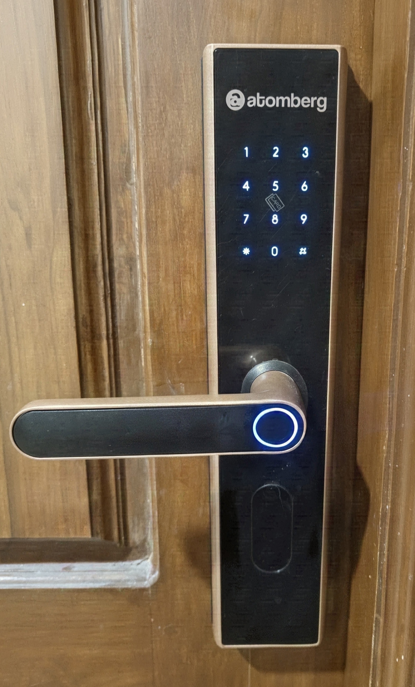
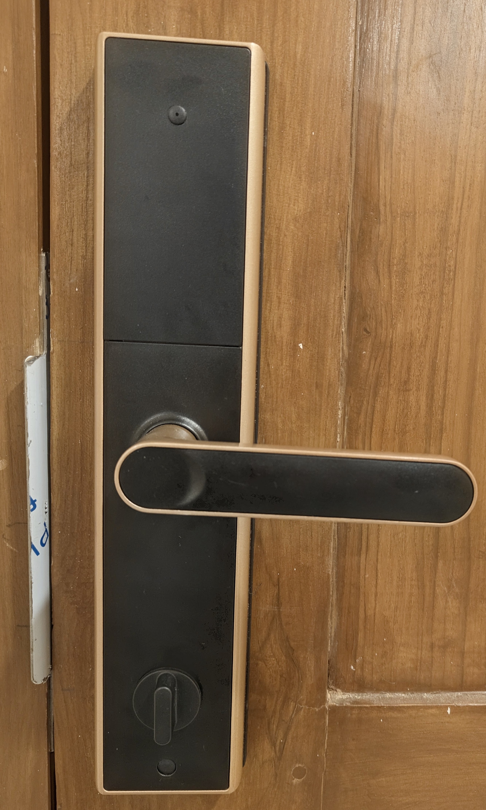
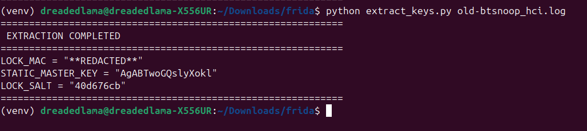
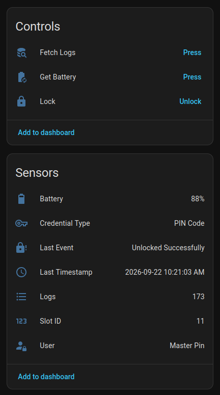
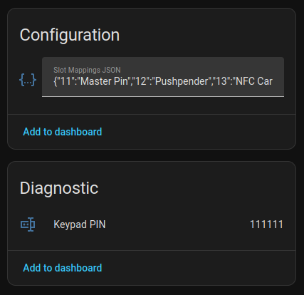

The Annoyance That Started It All
I bought the Atomberg SL1 Pro smart door lock expecting a modern, hassle-free way to secure my front door. As a piece of physical hardware, it is actually impressive, and it gives you a bunch of ways to get inside: mobile app, fingerprint sensor, keypad, NFC cards and physical keys.


The software side was a completely different story.
The moment I paired the lock with their official mobile app, the friction started immediately. Every single time I wanted to inspect battery levels, adjust user access, or check audit logs, the app insisted on having phone location toggled on. If location was off, it outright refused to discover or talk to the lock over Bluetooth.
Beyond the annoyance of permission prompts, the fundamental flaw was isolation. The lock was trapped in its own walled garden, completely severed from the central brain of my home: Home Assistant.
Underneath all the companion app marketing, this is just a standard Bluetooth Low Energy peripheral listening for radio frames. If their smartphone app could tell the lock what to do over radio packets, Home Assistant could do the exact same thing locally.
The Goal
- Eliminate the companion app and its mandatory location prompts.
- Control the lock directly from my local Home Assistant dashboard.
- Monitor battery percentage
- Capture audit logs to see who entered using which fingerprint, PIN, or NFC card.
- Make the solution reproducible so other users can set it up without root or hex editors.
Peeling Back the Layers
Figuring out how this lock actually communicates was an entertaining journey full of cryptographic puzzles, timing quirks, and Android tinkering. Here is how the story unfolded.
Step 1: The App Teardown & The Secret Bootstrap Key
The obvious first stop was deobfuscating and decompiling the official Android APK to see how pairing worked.
Buried in the crypto helper classes was a hardcoded 16-byte key:
mQ3cJOATdERLW1a5
It turned out this key is universal across every lock they make. It acts like a factory bootstrap password. When you pair a fresh lock with your phone for the very first time, the mobile app wraps its greeting message using this hardcoded key. The lock decrypts it, generates its own unique credentials, and hands them back to the phone.
Step 2: Spying on Memory with Frida
Static code only tells you half the story; I wanted to see the actual conversations happening in real time. I fired up Frida on my rooted phone to hook right into Android native crypto methods while tapping around in the app.
Watching the buffers fly past live in my terminal answered the cryptographic mystery:
- The Encryption: Standard AES-128 in Electronic Codebook (ECB) mode with PKCS#7 padding. No initialization vectors, just clean 16-byte chunks.
- The Static Master Key: During that very first handshake, the lock creates a unique 16-character ASCII key (for example:
AgABTwoGQslyXokl). The lock writes this permanently into its internal flash memory. It stays identical across every daily unlock unless you physically reset the lock to factory defaults. - Dynamic Session Keys: Even though the Master Key is permanent, the lock does not let you reuse it for normal commands. On every single connection, the lock and phone negotiate a brand new, one-time 16-byte session key and a 4-byte session token. Every unlock command or battery check that follows has to use that ephemeral session key.
Step 3: The Four-Step Dance
You cannot just wake up the lock and shout "open!" at it. The lock firmware is strict about its security lifecycle. Every single connection has to perform a four-step dance:
- Probe (0x00F0): Encrypted with your Master Key. Proves who you are and grabs a 4-byte session token.
- Key Request (0x00F1): Send back the token using the Master Key. The lock generates that session unique ephemeral key.
- Context Sync (0x00F2): Send your unique Lock Salt encrypted with the new session key. The lock acknowledges you are authorized to issue commands.
- Execute (0x0001): Now you can trigger the motor. The deadbolt pulls back, and the door opens.
Once I replicated this handshake in a Python script, the lock unlocked. The front door was officially mine.
Step 4: Tracking Who Came Through the Door
While testing the vendor app, I noticed it could generate temporary single-use visitor passcodes. For that feature to work, the lock obviously needs a way to report which specific credential was used to open the door.
That made me dig deeper into the Bluetooth captures, and I found a goldmine:
- Live Push Alerts (Opcode 0x000A): Whenever someone touches the lock while connected, it immediately broadcasts an unsolicited notification packet containing the event, battery state, and credential details.
- Flash Audit History (Opcode 0x0009): The lock actually stores an offline history log in its internal flash memory chip. Each event is a neat 32-byte record.
Decoding these records revealed rich telemetry:
| Unlock Method | Raw Bytes Sent by Lock | What Shows in Home Assistant |
|---|---|---|
| Fingerprint | Event: 0x04Type: 0x01Slot: 0x0011 / 0x0014 |
Unlocked by - Left Thumb Unlocked by - Right Thumb |
| NFC Card | Event: 0x04Type: 0x04Slot: 0x000D |
Unlocked by - NFC Card 1 |
| Keypad PIN | Event: 0x04Type: 0x02User: 0x03E9ASCII: 31 32 33 34 35 36 |
Unlocked by - PIN: 123456 |
| Atomberg App | Event: 0x04Type: 0x00Slot: 0 |
Unlocked by - Atomberg App |
| Denied Attempt | Event: 0x36Type: 0x02 (Wrong PIN)ASCII: 31 31 31 31 31 31 |
Alert: Wrong Keypad PIN: 111111 |
Step 5: Making It Frictionless for Everyone Else
I had achieved local control on my own machine, but relying on Frida hooks on a rooted Android device is not something normal smart home users want to deal with. If I wanted to open-source a Home Assistant integration, the credential extraction had to be accessible to anyone.
The eureka moment came from remembering the lifecycle of that Static Master Key. Because it is generated fresh whenever the lock is paired, resetting the lock forces it to send that key over the air to the app, encrypted with the universal factory bootstrap key.
The solution was clean:
- Turn on standard Bluetooth HCI Snooping in Android Developer Options (no root required).
- Reset the lock and pair it normally in the mobile app once.
- Pull the Bluetooth log file via ADB.
- Run a small helper script that automatically hunts down the initial handshake, decrypts it with the factory key, and prints the exact three values needed for Home Assistant.

Those three values are all you need: your lock MAC Address, its permanent Static Master Key, and a 4-byte Lock Salt.
Step 6: The BLE Fragmentation Trap
Extracting those keys from the Bluetooth log was not smooth sailing at first. My early scripts kept complaining that zero frames were found.
The culprit was default Bluetooth Low Energy packet sizing. The lock operates on the standard 23-byte MTU limit, leaving only 20 bytes for actual payload per packet. When the lock replies with a 41-byte key exchange message, it cuts it across multiple transmissions: 20 bytes, then another 20 bytes, then a lonely 1-byte tail piece.
If you search for 16-byte or 32-byte AES blocks without reassembling those fragments first, you are staring at broken ciphertext. Once I wrote a proper channel reassembler that stitched those 20-byte chunks back together, the decryption script popped the Master Key out instantly.
The Anatomy of an HSJ Packet
Every single message flying back and forth over the air is wrapped in a tidy binary envelope:
+---------------+----------------+----------------+--------------------------+---------------+
| Header (3B) | Total Len (2B) | Outer Seq (2B) | Encrypted Payload (NB) | Checksum (2B) |
+---------------+----------------+----------------+--------------------------+---------------+
| 0x48 0x53 0x4A| Big-Endian | Big-Endian | AES-128-ECB Ciphertext | Modbus CRC-16 |
| ("HSJ") | uint16 | uint16 | (Multiple of 16 Bytes) | Big-Endian |
+---------------+----------------+----------------+--------------------------+---------------+
It starts with the magic ASCII characters HSJ, specifies the total length of the frame, tracks a rolling sequence number, holds the padded AES ciphertext, and caps it off with a standard Modbus CRC-16 checksum.
Whenever a packet is longer than 20 bytes, the sender simply slices it into 20-byte pieces with a brief 30ms breather between chunks so the Bluetooth radio buffer does not overflow.
Living Locally in Home Assistant
With the protocol completely mapped out, I built a custom Home Assistant integration (atomberg_lock) to manage the entire lifecycle. The hardware also enforces a strict single-connection limit.
The integration handles this with an efficient connection queue:
┌────────────────────────────────────────────────────────────┐ │ HOME ASSISTANT CORE │ │ │ │ Entities Exposed: │ │ - lock.atomberg_sl1_pro_door (Unlock with 5s auto-relock) │ │ - sensor.atomberg_battery (Live percentage tracking) │ │ - sensor.atomberg_last_event (Push alerts & timestamps) │ │ - sensor.atomberg_user (Decoded name based on slot ID) │ │ - sensor.atomberg_keypad_pin (Diagnostic entered PIN) │ │ - text.atomberg_slot_mappings_json (Editable names) │ │ - button.get_battery │ │ - button.fetch_logs │ └────────────────────────────────────────────────────────────┘
Whenever an unlock is requested, the coordinator connects, executes the 4-step handshake, triggers the deadbolt, starts a 5-second auto-relock timer to reflect the physical latch behavior, and drops the Bluetooth link cleanly.
The End Result
The lock now lives completely inside Home Assistant as a first-class citizen, operating over pure local Bluetooth Low Energy without needing the official app or an internet connection.


I get live battery readouts, and granular audit trail sensors that immediately parse which user opened the door.
The hardware behaves exactly as a smart home device should: responsive, private, and fully integrated into my local automations.
What I Want to Look at Next
Having local control and access logs inside Home Assistant opens the door to far more contextual automations than just unlocking deadbolts.
Because the lock decodes individual credential slots (identifying whose fingerprint or card just touched the sensor), my next plan is to tie this directly into whole-home arrival automations:
- Personalized Welcome Announcements: Trigger smart speaker TTS announcements like "Welcome home, Pushpender" the instant my fingerprint verifies.
- Contextual Evening Routines: Disarm alarm modes, spin up specific entry lights, and set climate control based on who unlocked the door after sunset.
- Security & Tamper Alerts: Push immediate high-priority snapshot notifications if multiple wrong PINs or unknown NFC tags are registered on the keypad.
Treating the front door as an identity sensor turns the lock into an active trigger for the entire house.
Final Thoughts
What started as annoyance over location permission nag screens turned into a complete reverse engineering adventure.
Now, my front door lock operates 100% locally. The deadbolt unlocks instantly from my dashboard, and every single entry log is archived privately on my own server without a single byte leaving the house.
Smart devices in your home should answer to you, not to a vendor cloud app. If you are willing to look at the packets, you can usually take back control.
⭐ View on GitHub